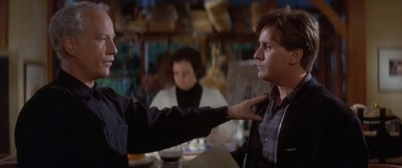
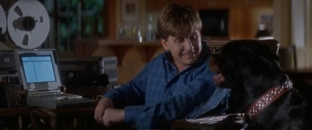
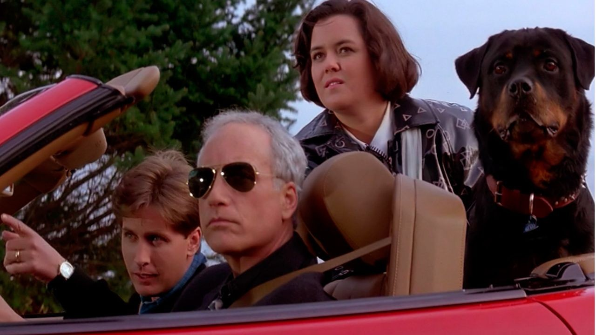

Sommaire8 sections
Quand mon grand-père a acheté la suite d'Étroite surveillance en VHS, j'avais encore mes douze ans.
J'étais content de retrouver le duo. Richard Dreyfuss et Emilio Estevez, que j'avais adoré dans le premier film, remis face à face, avec toujours ce mélange de burlesque et d'action. Pour moi, la suite avait le même goût que le premier.
Je l'ai revue récemment. Et j'ai de nouveau passé une excellente soirée en leur compagnie.
Ce soir, on remet ça.

Richard Dreyfuss et Emilio Estevez dans Indiscrétion assurée (1993)
Indiscrétion assurée, titre original Another Stakeout, sort aux États-Unis le 23 juillet 1993, six ans après le premier film. John Badham est de nouveau à la réalisation, Jim Kouf au scénario, Arthur B. Rubinstein à la musique. Le film est produit par Touchstone Pictures et dure 109 minutes.
Richard Dreyfuss et Emilio Estevez retrouvent leurs rôles : Chris Lecce et Bill Reimers. Rosie O'Donnell les rejoint dans le rôle de Gina Garrett, une procureure adjointe. Dennis Farina, Marcia Strassman, Cathy Moriarty et Miguel Ferrer complètent la distribution.
Cette fois, la planque a un autre cadre. Luella Delano, une témoin à charge contre la mafia, a disparu après une attaque. Chris et Bill doivent surveiller la maison au bord d'un lac de ses amis, Brian et Pam O'Hara, pour s'assurer qu'elle est en sécurité. Gina les accompagne avec son rottweiler, Archie, et le trio se fait passer pour une famille : un mari, une femme et leur fils.
C'est le même ingrédient que dans le premier film, une surveillance, du suspense et de la comédie, avec cette fois un trio.
Un film qui rapporte plus de 65 millions de dollars appelle une suite. Six ans après, Touchstone remet donc en place la même équipe : John Badham à la réalisation, Jim Kouf au scénario, Arthur B. Rubinstein à la musique, et bien sûr Richard Dreyfuss et Emilio Estevez devant la caméra.
Le budget double : 30 millions de dollars, contre 14,5 pour le premier. Rosie O'Donnell rejoint le duo, Dennis Farina, Cathy Moriarty et Miguel Ferrer complètent le casting, et Madeleine Stowe revient dans le rôle de Maria.
L'histoire se passe sur l'île de Bainbridge, près de Seattle, mais le film est tourné pour l'essentiel sur l'île de Bowen, près de Vancouver, comme le premier. Seul plan de Seattle : une vue aérienne de la Space Needle.
Le film sort le 23 juillet 1993. Il démarre à la neuvième place du box-office américain, avec 5,4 millions de dollars le premier week-end, loin de la première place qu'avait prise son aîné. Il termine avec environ 30 millions de dollars de recettes dans le monde, à peine son budget.
La critique est partagée : 16 % d'avis positifs sur Rotten Tomatoes, 53 sur 100 sur Metacritic. Roger Ebert lui donne trois étoiles et le compare à un chewing-gum pour l'esprit, qui garde son goût mieux que la plupart. Pour le Los Angeles Times, le film n'est ni le meilleur ni le pire d'une longue liste de suites sans imagination.

Emilio Estevez dans Indiscrétion assurée (1993)
Luella Delano, une témoin à charge contre la mafia, est cachée en attendant son procès. Un tueur à gages fait exploser sa maison, et elle disparaît. Chris et Bill sont chargés de surveiller la maison au bord d'un lac de ses amis, les O'Hara, pour s'assurer qu'elle est en sécurité.
Ils ne sont pas seuls : Gina Garrett, procureure adjointe, les accompagne, avec son rottweiler, Archie. Pour se fondre dans le décor, le trio se fait passer pour une famille, un mari, une femme et leur fils, dans la maison d'été d'un juge voisine de celle des O'Hara.
Chris, de son côté, a ses problèmes : Maria, sa petite amie depuis six ans, vient de le mettre dehors, parce qu'il refuse de se marier. Et la mission ne tourne pas comme prévu : les trois font la connaissance de leurs voisins, Bill tente de poser des micros chez eux, et un dîner censé l'aider tourne mal.
Je m'arrête là : ce film se découvre mieux sans rien savoir de la suite.
Indiscrétion assurée a un défaut que la critique a vite repéré : il ressemble beaucoup à son aîné. Même équipe, même formule, une planque, des voisins qu'on espionne, des chamailleries. Un critique y voit une version diluée du premier film, qui perd en route le suspense et la romance.
Mais ce qui faisait la force du premier film est encore là. Richard Dreyfuss et Emilio Estevez se chamaillent avec le même plaisir, et pour la critique c'est ce duo qui porte le film. Leurs disputes restent la principale source de divertissement.
Rosie O'Donnell s'ajoute à eux en troisième roue : une procureure qui ne comprend rien aux planques, ce qui ajoute de la tension entre les deux policiers. Elle amuse, même si son rôle est sous-employé. Dennis Farina et Marcia Strassman, en voisins soupçonneux, sont très bons.
Du côté des méchants, c'est plus faible : Cathy Moriarty a peu de temps à l'écran, et Miguel Ferrer n'est pas très menaçant en tueur à gages. L'humour est inégal, le ton plus léger, moins tendu.
Le film n'est donc pas à la hauteur du premier, et il le sait. Roger Ebert le range pourtant parmi les films qui gardent leur goût mieux que d'autres : trois étoiles, comme pour l'original.

Emilio Estevez, Richard Dreyfuss et Rosie O'Donnell dans Indiscrétion assurée (1993)
Pour Indiscrétion assurée, la question n'a pas besoin de détour : le public n'a pas suivi.
Le film sort le 23 juillet 1993, avec 30 millions de dollars de budget, soit le double du premier. Il démarre à la neuvième place du box-office américain, avec 5,4 millions de dollars le premier week-end. Au total, il rapporte environ 20 millions de dollars aux États-Unis, 9 millions à l'étranger, soit un peu moins de 30 millions, donc moins que ce qu'il avait coûté.
La critique n'a pas été plus tendre : 16 % d'avis positifs sur Rotten Tomatoes. On lui reprochait de refaire le premier film, en moins bien, avec moins de suspense et moins de romance. Les spectateurs, eux, lui ont donné un B+, ce qui montre un public moins sévère que les critiques.
Le résultat est sans appel : il n'y aura pas de troisième film. Le duo Dreyfuss et Estevez, qui avait si bien fonctionné en 1987, s'arrête là.
Alors la suite a été oubliée, avec elle une partie du premier film. C'est dommage, car les deux acteurs ont gardé le plaisir de jouer ensemble, et ça se voit.
Pourquoi le revoir, alors ? D'abord pour le duo, encore et toujours. Les chamailleries de Richard Dreyfuss et d'Emilio Estevez restent la principale source de plaisir du film. On les retrouve comme si six ans ne s'étaient pas écoulés.
Ensuite pour ses seconds rôles : Rosie O'Donnell en procureure qui ne comprend rien aux planques, qui crée de la tension entre les deux policiers, et Dennis Farina et Marcia Strassman, très bons en voisins soupçonneux.
Et puis pour l'humeur. Le film est plus léger, moins tendu que le premier, et ça lui donne un côté film de vacances : une maison au bord d'un lac, un chien, une fausse famille. Roger Ebert disait qu'il garde son goût mieux que la plupart des films du genre.
Pour moi, c'est un film que j'ai retrouvé avec plaisir. Je l'ai revu récemment, et j'ai de nouveau passé une excellente soirée avec eux.
Regardez-le après le premier, sans en attendre le même film. Vous y trouverez ce qui compte : deux hommes qui se chamaillent, et qui s'aiment bien.
Indiscrétion assurée n'est pas le meilleur film de Badham, et il n'a pas fait date. Il a rapporté moins que ce qu'il avait coûté, et la critique ne l'a pas épargné.
Mais pour moi, il compte. Mon grand-père l'avait acheté en VHS, j'avais encore mes douze ans, et j'étais content de retrouver ce duo. Je l'ai revu récemment, et j'ai de nouveau passé une excellente soirée en compagnie de Dreyfuss et d'Estevez.
Avec Étroite surveillance, ça fait deux films, deux cassettes, et un duo qui m'a accompagné bien après mes douze ans.
Merci d'avoir regardé ce double épisode de SOMEDAY. Et si vous aussi, vous avez découvert ces films en VHS, dites-le-moi : somedayvhs@outlook.fr.
La cassette est dans le lecteur. On rembobine.
Titre original
Another Stakeout
Pays
États-Unis
Genre
Comédie policière · Thriller
Durée
109 min
Producteurs
Lynn Bigelow · Jim Kouf · Cathleen Summers
Avec aussi
Rosie O'Donnell · Dennis Farina · Cathy Moriarty · Miguel Ferrer
Musique
Arthur B. Rubinstein
Note
Découvert vers 12 ans, en VHS, grâce à mon grand-père
SOMEDAY — S4 EP. 03